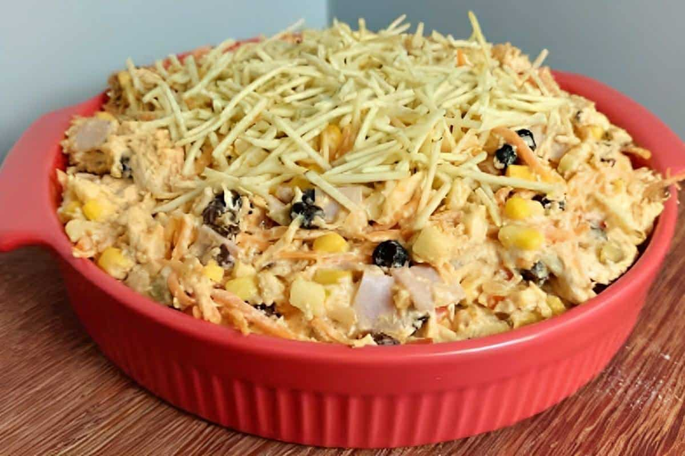

Receitas Salgadas
1. Coxinha de Frango
Ingredientes
- 1 litro de água do cozimento do frango
- 1/2 xícara (chá) de óleo
- 4 e 1/2 xícaras (chá) de farinha de trigo
- Sal e temperos a gosto
- 1 peito de frango cozido e desfiado
- Farinha de rosca e água para empanar
Modo de preparo
- **Preparo do Caldo:** Cozinhe o peito de frango em água temperada. Reserve o frango desfiado e separe 1 litro do caldo.
- **Massa:** Em uma panela grande, coloque o caldo reservado, o óleo e o sal. Leve ao fogo médio para aquecer.
- Quando ferver, junte a farinha de trigo de uma única vez e cozinhe, mexendo vigorosamente, até a massa soltar do fundo da panela. Retire e deixe esfriar.
- **Recheio:** Refogue o frango desfiado com cebola, alho, e extrato de tomate até obter um recheio úmido. Deixe esfriar.
- **Montagem:** Divida a massa em porções, abra-as, distribua o recheio e modele em formato de coxinhas.
- Passe-as na água e na farinha de rosca. Frite-as em óleo quente até dourarem.
2. Lasanha à Bolonhesa Simples
Ingredientes
- 400 g de carne moída
- 1 cebola picada
- Polpa de tomate e água
- Massa de lasanha seca (direto ao forno)
- 200 g de presunto fatiado
- 300 g de muçarela fatiada
- Tempero (sal, Sazón)
Modo de preparo
- **Molho:** Refogue a cebola e a carne moída. Tempere com sal e tempero. Adicione a polpa de tomate e a água. Deixe cozinhar em fogo baixo por cerca de 5 minutos.
- **Montagem:** Em um refratário, intercale camadas de molho, massa de lasanha, presunto e muçarela. Finalize com muçarela.
- Cubra com papel-alumínio e leve ao forno médio (180°C), preaquecido, por 20 minutos.
- Remova o papel-alumínio e volte ao forno por mais 5 minutos, ou até dourar o queijo. Sirva em seguida.
3. Salpicão de Frango

Ingredientes
- 2 xícaras (chá) de frango cozido e desfiado
- 2 batatas cozidas e picadas
- 1 xícara (chá) de milho e ervilha
- 2 cenouras raladas
- 1 maçã picada (opcional)
- Uvas-passas (opcional)
- Maionese ou Creme de Leite a gosto
- Batata palha para cobrir
Modo de preparo
- Em uma tigela grande, coloque o frango, a batata, o milho, a ervilha, a cenoura, a maçã e as uvas-passas.
- Adicione a maionese (ou creme de leite) e tempere com sal a gosto. Misture bem até que todos os ingredientes estejam envolvidos.
- Transfira para uma travessa. Cubra com plástico filme e leve à geladeira por, no mínimo, 1 hora.
- Na hora de servir, cubra o salpicão com a batata-palha e sirva gelado.